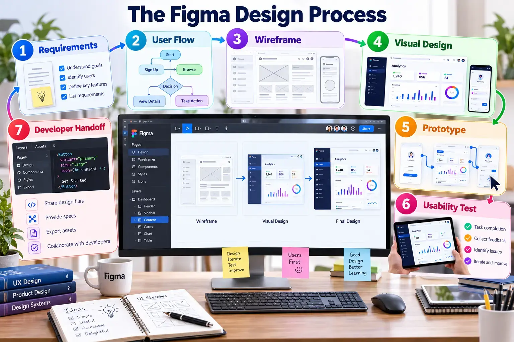

Start with users and decisions, not decoration
A disciplined process connects requirements, user flows, wireframes, visual hierarchy, prototyping, testing and handoff.

Seven design stages
| Stage | Question | Evidence |
|---|---|---|
| Requirements | Who is the user and what decision must be made? | Requirements table |
| User flow | What sequence completes the task? | Flow diagram |
| Wireframe | Where should information and actions appear? | Low-fidelity screens |
| Visual design | How will hierarchy, colour and typography guide attention? | High-fidelity mock-up |
| Prototype | How does the interface respond? | Connected screens |
| Usability test | Can another person complete the task? | Observation notes |
| Handoff | Can a developer implement the intended behaviour? | Specifications and assets |
SCST1133 design brief
Design a Data Pipeline Monitoring Dashboard for a data engineer. The interface must reveal failed pipelines, recent activity, processed records and the next action without unnecessary navigation.
- Define the primary user and task.
- Create a user flow before visual styling.
- Produce low- and high-fidelity versions.
- Explain three design decisions.